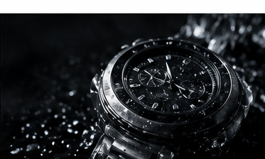

Motion direction
Scroll showreel reveal.
Полноэкранный шоурил при скролле собирается в фирменный кадр. Это тот же принцип, что у Apple: pinned section + scroll-scrubbed transform + masked video reveal.PRISM effect 01
Сначала атмосфера. Потом форма.



How it can work on the site